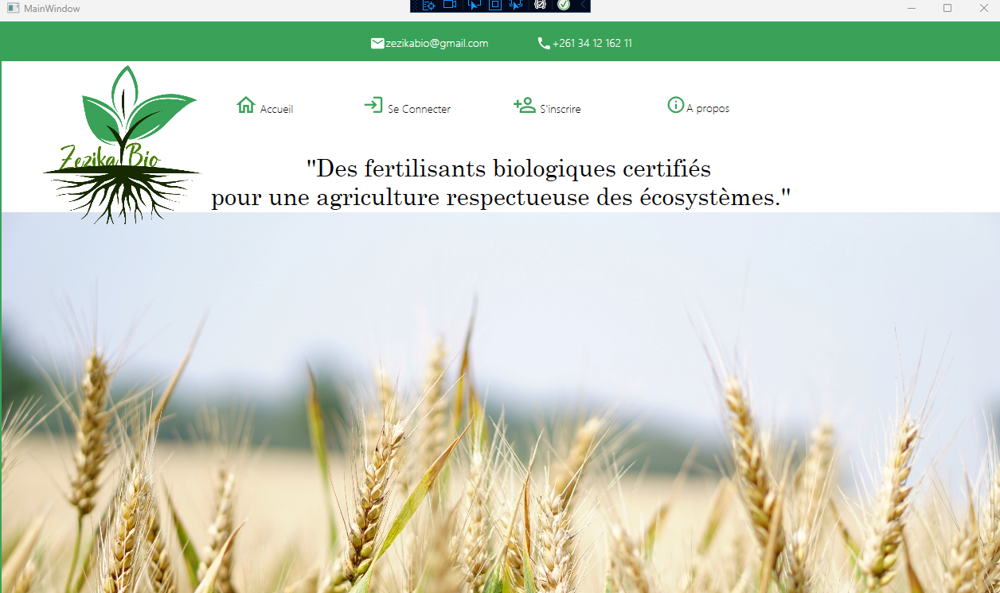
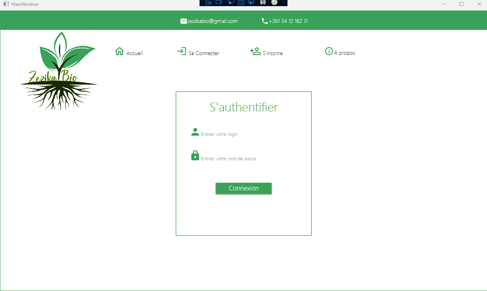
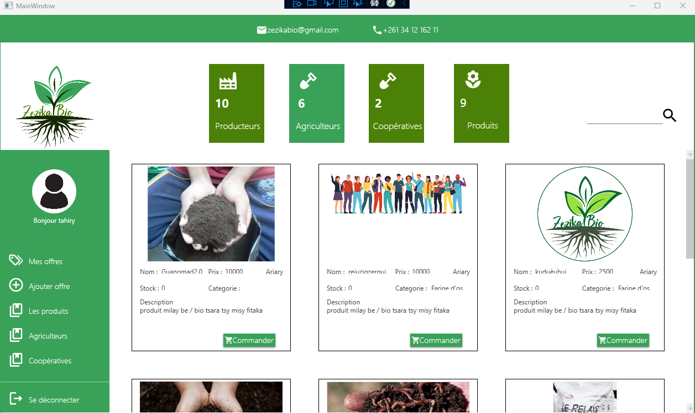

Description du projet
Imaginez un monde où les plantes chantent de joie...
... Un monde où les fruits et légumes sont si savoureux qu'on en redemande encore et encore. Un monde où la terre est nourrie et saine, et où les agriculteurs cultivent leurs produits avec fierté et respect. Ce monde n'est pas un rêve, il est à notre portée grâce à un projet extraordinaire : la mise en relation des acteurs de la production agricole pour la production de fertilisants biologiques !
C'est quoi ?
C'est une plateforme qui met en relation :
- Les agriculteurs qui ont besoin de fertilisants biologiques pour nourrir leurs sols et faire pousser des produits sains et délicieux.
- Les sociétés qui produisent des fertilisants biologiques de qualité, à base de matières naturelles et respectueuses de l'environnement.
- Les ONG qui accompagnent les agriculteurs dans la transition vers une agriculture biologique plus durable et plus rentable.
Comment ça marche ?
C'est simple !
- L'agriculteur s'inscrit sur la plateforme et indique ses besoins en fertilisants biologiques.
- La plateforme lui propose une liste de et d'ONG qui peuvent répondre à ses besoins.
- L'agriculteur contacte les sociétés et les ONG pour comparer leurs offres et choisir la solution qui lui convient le mieux.
Pourquoi c'est important ?
Lesfertilisants chimiques sont néfastes pour l'environnement et la santé. Ils polluent les sols et les rivières, et peuvent être responsables de maladies graves.
Les fertilisants biologiques sont une alternative naturelle et durable. Ils nourrissent les sols et les plantes en profondeur, et contribuent à la production de fruits et légumes plus sains et plus savoureux.
utilisant la plateforme, les agriculteurs
- peuvent : Accéder à une large gamme de fertilisants biologiques de qualité.
- Bénéficier des conseils et de l'accompagnement d'experts en agriculture biologique.
- Réduire leurs coûts de production et améliorer leur rentabilité.
- Produire des fruits et légumes plus sains et plus savoureux.
Et tout cela, en contribuant à la protection de l'environnement et à la construction d'un avenir durable !
Alors, qu'attendez-vous ?
Rejoignez la plateforme dès aujourd'hui et participez à la révolution de l'agriculture biologique !
Ensemble,nous pouvons créer un monde où les plantes chantent de joie !
Captures d'écran
- 
- 
- 